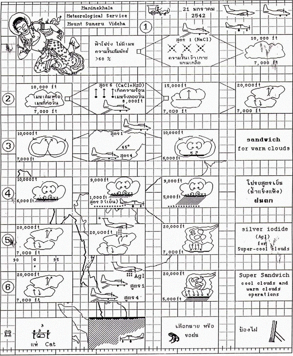

พระบาทสมเด็จพระบรมชนกาธิเบศร มหาภูมิพลอดุลยเดชมหาราช บรมนาถบพิตร โปรดเกล้าฯ ให้มีการปฏิบัติการฝนหลวงพิเศษกู้ภัยแล้ง พ.ศ. ๒๕๔๒ อย่างสัมฤทธิ์ผล นอกจากจะโปรดเกล้าฯ ให้ฟื้นฟูทบทวนประสบการณ์และเทคนิคพระราชทานที่เคยปฏิบัติการได้ผลมาแล้วในอดีตมาใช้ปฏิบัติการในครั้งนี้แล้ว ยังโปรดเกล้าฯ ให้มีการพัฒนาเทคโนโลยีและเทคนิคควบคู่กันไปด้วย ซึ่งทรงสามารถพัฒนากรรมวิธีการทำฝนหลวงให้ก้าวหน้าขึ้นอีกระดับหนึ่ง คือ เป็นการปฏิบัติการฝนหลวงโดยการดัดแปรสภาพอากาศ ให้เกิดฝนโดยเทคโนโลยีฝนหลวงจากทั้งเมฆอุ่นและเมฆเย็นพร้อมกัน (เดิมเป็นกิจกรรมทำฝนหลวงจากเมฆอุ่นเพียงอย่างเดียว) ด้วยพระปรีชาสามารถทรงพัฒนาเทคนิคการโจมตีเมฆอุ่นและเมฆเย็น พร้อมกันในกลุ่มเมฆเดียวกัน ซึ่งโปรดเกล้าฯ ให้เรียกเทคนิคการโจมตีที่ทรงประดิษฐ์คิดค้นขึ้นมาเป็นวัตกรรมใหม่ล่าสุดว่า SUPER SANDWICH TECHNIC ทรงสรุปขั้นตอนกรรมวิธีโดยทรงประดิษฐ์ขึ้นเป็นแผนภาพการ์ตูนโดยคอมพิวเตอร์ด้วยพระองค์เอง พระราชทานให้ใช้เป็น ตำราฝนหลวง เพื่อให้เป็นแบบอย่างใช้ในการปฏิบัติการฝนหลวงให้เป็นไป ในทางเดียวกัน แผนภาพฝีพระหัตถ์ดังกล่าวประมวลความรู้ทางวิชาการเทคนิคและกระบวนการขั้นตอนกรรมวิธีในการปฏิบัติการฝนหลวงอย่างครบถ้วนทั้งเทคโนโลยีฝนหลวงไว้ในหนึ่งหน้ากระดาษ ได้อย่างสมบูรณ์ ง่ายต่อความเข้าใจและการถือปฏิบัติ
กระบวนการดัดแปรสภาพอากาศให้เกิดฝนโดยเทคโนโลยีฝนหลวงเป็นนวัตกรรมใหม่ล่าสุดที่ทรงประดิษฐ์คิดค้นขึ้นมาพระราชทานให้ใช้ปฏิบัติการในประเทศไทยเป็นประเทศแรก ยังไม่มีประเทศใดในโลกเคยปฏิบัติด้วยเทคโนโลยีนี้มาก่อนอย่างแน่นอน
พระบาทสมเด็จพระบรมชนกาธิเบศร มหาภูมิพลอดุลยเดชมหาราช บรมนาถบพิตร ทรงประดิษฐ์ภาพ "ตำราฝนหลวง" ด้วยคอมพิวเตอร์ แสดงขั้นตอนและกรรมวิธีการดัดแปรสภาพอากาศให้เกิดฝนจากเมฆอุ่นและเมฆเย็นและพระราชทานแก่นักวิชาการฝนหลวงถือปฏิบัติในแนวทางเดียวกัน เมื่อวันที่ ๒๑ มีนาคม ๒๕๔๒

กรมฝนหลวงและการบินเกษตร
https://www.royalrain.go.th/royalrain/Editor_Page.aspx?MenuId=94